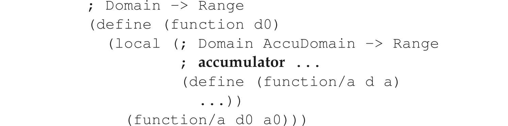
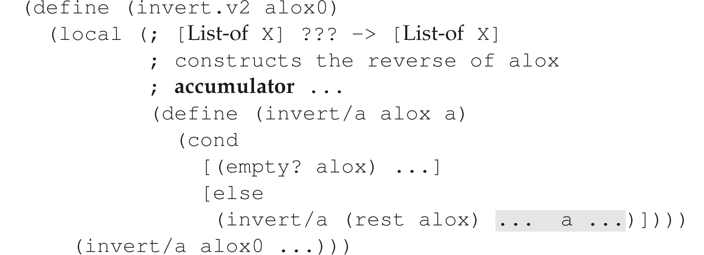
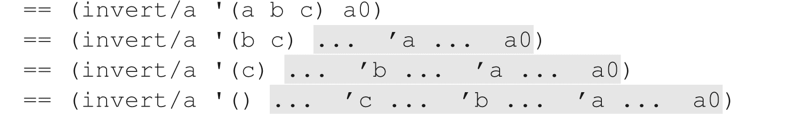
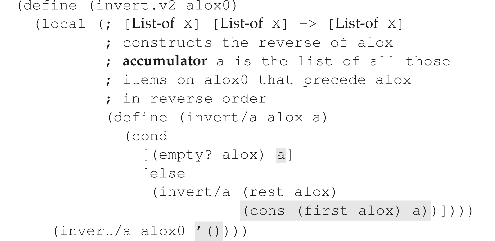

32.2 Adding Accumulators
Once you have decided that an existing function should be equipped with an accumulator, take these two steps:
• Determine the knowledge that the accumulator represents, what kind of data to use, and how the knowledge is acquired as data.
For example, for the conversion of relative distances to absolute distances, it suffices to accumulate the total distance encountered so far. As the function processes the list of relative distances, it adds each new relative distance found to the accumulator’s current value. For the routing problem, the accumulator remembers every node encountered. As the path-checking function traverses the graph, it conses each new node on to the accumulator.
In general, you will want to proceed as follows.
1. Create an accumulator template:

Sketch a manual evaluation of an application of function to understand the nature of the accumulator.
2. Determine the kind of data that the accumulator tracks.
Write down a statement that explains the accumulator as a relationship between the argument d of the auxiliary function/a and the original argument d0.
Note The relationship remains constant, also called invariant, over the course of the evaluation. Because of this property, an accumulator statement is often called an invariant.
3. Use the invariant to determine the initial value a0 for a.
4. Also exploit the invariant to determine how to compute the accumulator for the recursive function calls within the definition of function/a.
• Exploit the accumulator’s knowledge for the design of function/a.
For a structurally recursive function, the accumulator’s value is typically used in the base case, that is, the cond clause that does not recur. For functions that use generative-recursive functions, the accumulated knowledge might be used in an existing base case, in a new base case, or in the cond clauses that deal with generative recursion.
As you can see, the key is the precise description of the role of the accumulator. It is therefore important to practice this skill.
Let’s take a look at the invert example:

As illustrated in the preceding section, this template suffices to sketch a manual evaluation of an example such as
(invert '(a b c))
Here is the idea:

This sketch suggests that invert/a can keep track of all the items it has seen in a list that tracks the difference between alox0 and a in reverse order. The initial value is clearly '(); updating the accumulator inside of invert/a with cons produces exactly the desired value when invert/a reaches '().
Here is a refined template that includes these insights:

While the body of the local definition initializes the accumulator with '(), the recursive call uses cons to add the current head of alox to the accumulator. In the base case, invert/a uses the knowledge in the accumulator, the reversed list.
Note how, once again, invert.v2 merely traverses the list. In contrast, invert reprocesses every result of its natural recursion with add-as-last. Stop! Measure how much faster invert.v2 runs than invert.
Terminology Programmers use the phrase accumulator-style function to discuss functions that use an accumulator parameter. Examples of functions in accumulator style are relative->absolute/a, invert/a, and path-exists?/a.